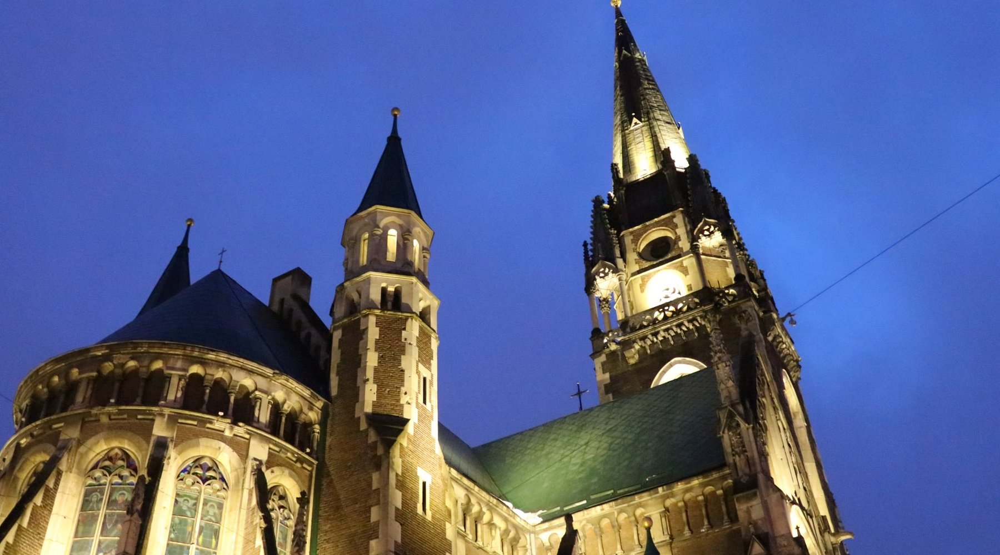

Lviv
Lviv ligt in Galicië aan het riviertje de Poltva, op ongeveer 80 kilometer van de grens met Polen, en is het bestuurlijke centrum van de oblast Lviv.
- De stad is behalve onder haar Oekraïense naam ook onder een groot aantal andere namen bekend of bekend geweest:Lvov (Russisch: Львов en Armeens: Լվով), Lwów (Pools), Lwiw (Duits), Lemberg (Duits en Nederlands), Lemberik (לעמבעריק, Jiddisch), Léopol (Frans), Leopoli (Italiaans) en Leópolis (Spaans) (uit Latijn Leopolis). Deze veelheid aan namen weerspiegelt de bewogen geschiedenis van de stad, die cultuurhistorisch tot de belangrijkste steden van Midden-Europa behoort.
- Tot het begin van de Tweede Wereldoorlog was Lviv een multiculturele metropool met een grote Poolse en Joodse bevolking. Daarnaast woonden er kleinere aantallen Duitsers, Oekraïners, Russen en Armeniërs. Op de Conferentie van Jalta in 1945 werd de stad door Stalin voor de Sovjet-Unie opgeëist en werd het deel van de Sovjetrepubliek Oekraïne. De nog aanwezige bewoners van de stad werden gedeporteerd en vervangen door Oekraïners en Russen.[1]
- Lviv is een UNESCO-Literatuurstad. Sinds 2023 staat het historische centrum op de lijst van bedreigd werelderfgoed.[2]

Bezinswaardigheid
- Undergrounds of Lviv Private Walking Tour
- Lychakiv Begraafplaats
- Svyatogo Yura Cathedral
- Lviv High Castle
- Insomnia - The Haunted House
Lokale activiteit
The House of Scientists

Church of Sts. Olha and Elizabeth
Prospekt Svobody

Church of St. Andrew